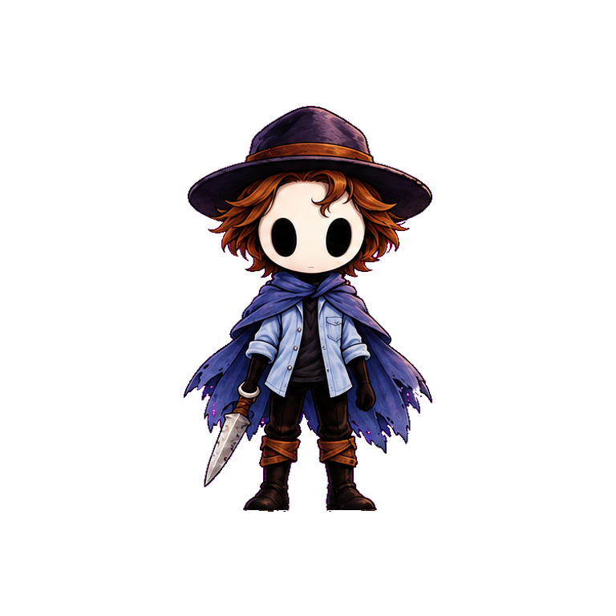
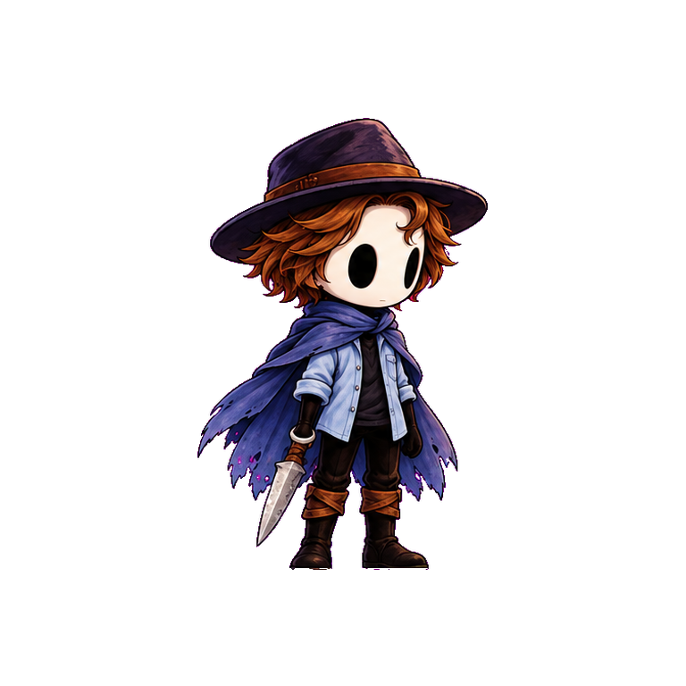
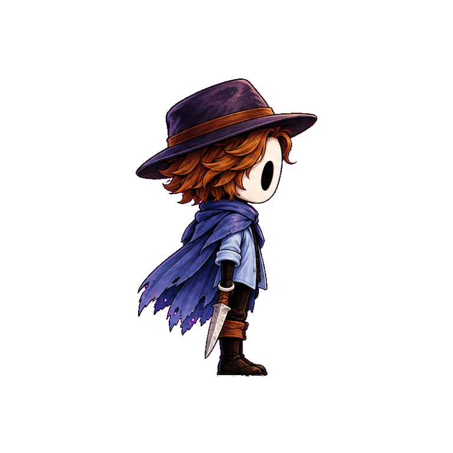
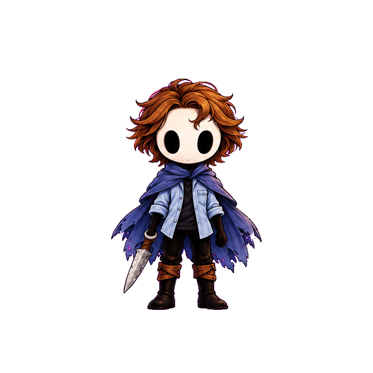
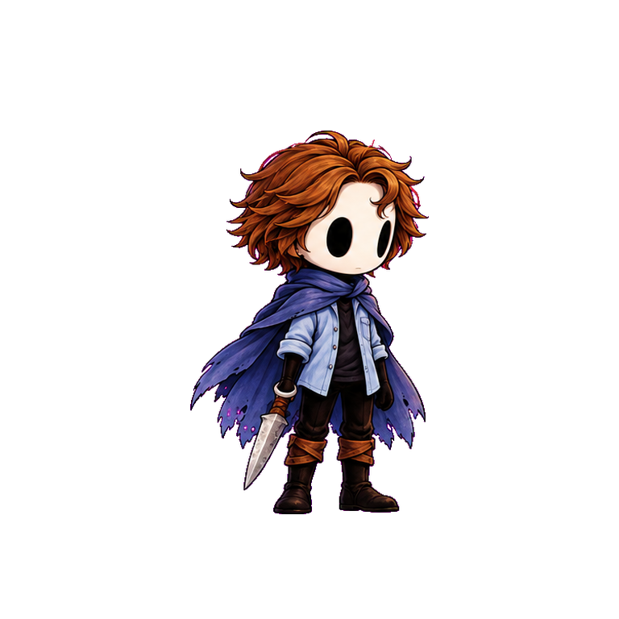
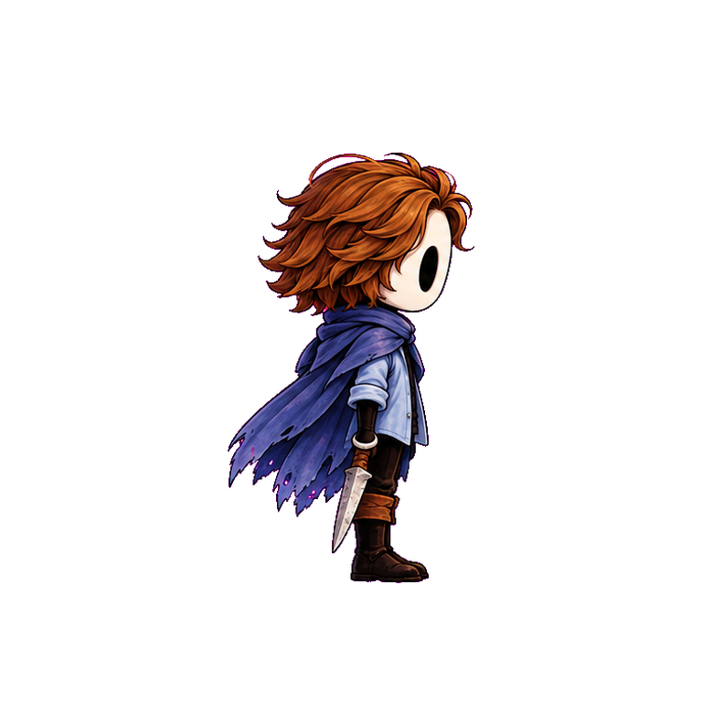

Классический Сумрак
Просмотр производственных кадров: один масштаб, светлый, тёмный и шахматный фон. Опоры показывают контакт стоп, голову и руку с предметом.
Единый мастер






Движение в живом мире · Руины и экология · Метаданные клипов · Общий профиль масштаба